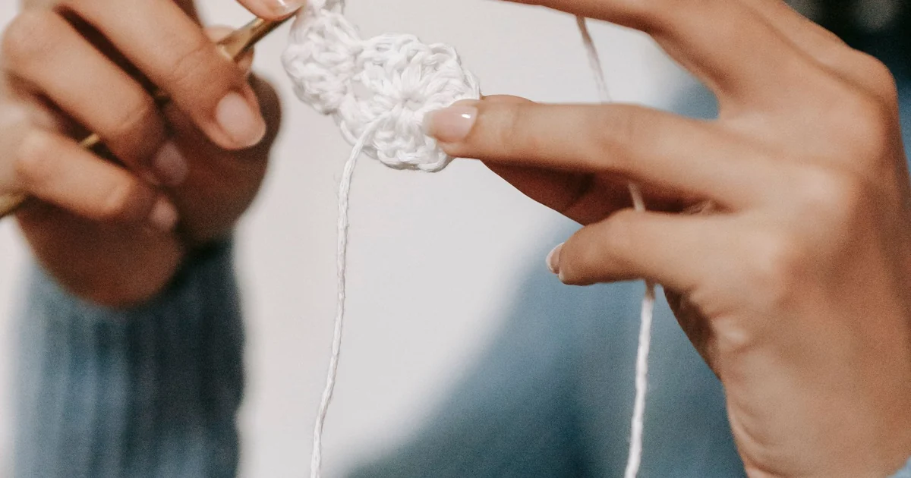

Tools, Yarn & Materials · Beginner guide
How to Choose Yarn for Your First Crochet Project
Pick a first-project yarn that matches the pattern, is easy to see, and feels manageable in your hands.

Smooth, light or medium colors make stitch tops easier to see than dark or highly textured yarn. Pattern requirements matter when size or care is important.
Before you begin
Compare yarn weight, fiber, yardage, and care needs with the label. A similar weight is a starting point, not proof that two yarns behave alike.
Step-by-step instructions
- Choose the project, then note its required yarn weight, fiber, amount, and suggested hook.
- Look for yarn whose strands are visible and do not split constantly as you insert the hook.
- Check yardage and care instructions; buy enough from a consistent dye lot when color matching matters.
- Make a test swatch and compare stitch definition, drape, and gauge before starting the full project.
What to check
Choose for the project, not just the skein
A soft skein can still make stiff fabric with a different stitch or hook. Let the swatch, label, and project requirements guide the choice.
Frequently asked questions
Is bulky yarn always easiest for beginners?
Not always. Bigger stitches can be easier to see, but bulky yarn may feel heavy or awkward for a small project.
Can I substitute a different fiber?
Sometimes, but it may change drape, care, stretch, and size. Check requirements and swatch first.
Is cotton, acrylic, or wool best for a first project?
It depends on the pattern and how the item will be used. Compare stitch visibility, feel, care instructions, and the project’s required fiber rather than choosing by fiber name alone.
Match fiber to the project’s use
Cotton, acrylic, and wool can all be workable, but they differ in feel, stretch, warmth, and care. Cotton yarns often have less elastic give than wool; acrylic yarns vary by construction and label care; wool’s warmth and elasticity vary by breed and blend. These are tendencies, not guarantees for every yarn. Check the label and pattern for washing, gauge, and fiber requirements. A table below can help you compare questions to ask, but the label for the exact yarn is the source for its care instructions.
Look for stitch definition you can see
For early practice, a smooth strand in a light or medium shade often makes loops easier to identify. Highly fuzzy yarn, dark colors, sequins, and very splitty strands can hide where the hook should go. This does not make them unsuitable for all projects; they can simply make the first rows harder to inspect. If you are deciding between skeins, make a short sample or examine a strand against the pattern’s stitch size. Choose a yarn you can comfortably handle for the time the project will take.
| Fiber | What to consider | Check before choosing |
|---|---|---|
| Cotton | Often has less elastic give than wool. | Does the pattern suit the drape and care directions on this label? |
| Acrylic | Feel and care vary by yarn and blend. | Follow the exact label; do not assume every acrylic is machine washable. |
| Wool | Warmth, stretch, and care vary by fiber and blend. | Check the label for washing and whether the pattern calls for wool. |
Use a sample to compare the actual fabric
A label and fiber name cannot show exactly how a yarn will feel in your chosen stitch. Work a small sample with the pattern hook and compare stitch definition, drape, and flexibility. For a first project, a smooth strand can make the hook path easier to see; for an item that will be washed often, care instructions may matter more. The best choice depends on both the pattern and the intended use. If you are uncertain between two yarns, compare the samples rather than choosing only by color or softness.
Common mistakes and how to fix them
- Choosing a yarn that hides the stitches. Fuzz, dark color, or texture can make loops hard to see. Try a smoother, lighter strand for early practice.
- Ignoring the pattern’s fiber and care needs. A substitute may change drape or washing. Read both pattern notes and yarn label.
- Buying by skein size instead of yardage. Two skeins can have different lengths. Compare the total yardage required before buying.
Tips that make it easier
- Check the label for fiber, weight, yardage, and care before purchasing.
- Handle the yarn if possible; notice whether it splits or feels tiring to work.
- Buy enough from one dye lot when color matching is important, and keep the band.
A useful next step
Check the pattern and label together, then use a sample to confirm how the materials behave before starting the full project.